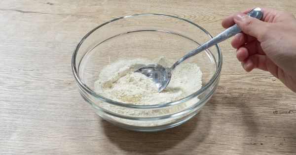
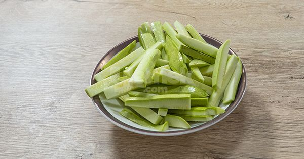
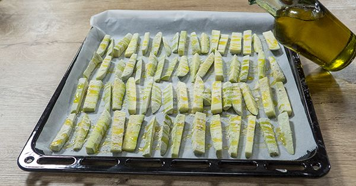
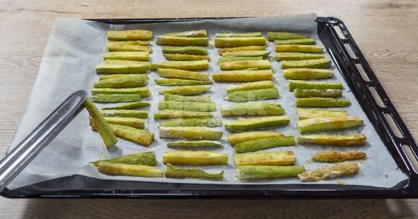
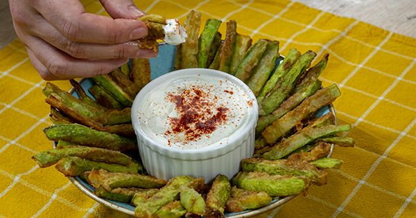

Fırında Çıtır Kabak
Evde kızartma yapmak, meşakkatli olması, evi kokutması ve yülsel yağ içermesi nedeniyle çok da tercih edilmiyor. Bu yüzden son günlerde diyetisyenlerin sık sık önerdiği fırında pişirme yöntemiyle çıtır kabak yapacağız. Kabağın çok seveni olmasa da eminim siz bu tarife bayılacaksınız. Çıtır çıtır kızaran kabakların yanında sarımsaklı yoğurdunuzu unutmayın. Şimdiden afiyet olsun!
Kaç kişilik?
- 2
Hazırlama süresi
- 10 dk
Pişirme süresi
- 35 dk
Malzemeler
- 3-4 adet kabak
- 3 yemek kaşığı un
- 2 yemek kaşığı mısır unu
- 1 yemek kaşığı galeta unu
- 1 tatlı kaşığı kabartma tozu
- 4-5 yemek kaşığı zeytinyağı
- İsteğe göre tuz, karabiber, pulbiber
Hazırlanışı
Un, mısır unu, galeta unu, kabartma tozu ve baharatları bir kapta iyice karıştırın.
Kabakları iyice yıkayarak ince uzun dilimler halinde kesin.
Kabak dilimlerini unlu karışıma iyice bulayarak, yağlı kağıt serdiğiniz bir tepsiye aralıklı olarak dizin.Üzerine zeytinyağı gezdirin. 180 derecede önceden ısıtılmış fırında 20 dakika boyunca pişirin.
20 dakika sonunda kabakların tersini çevirerek tekrar fırına verin. 20 dakika daha, aynı derecede pişirmeye devam edin.
Fırından çıkan, kızarmış kabak dilimlerini dilediğiniz sosla servis edin. Afiyet olsun!
